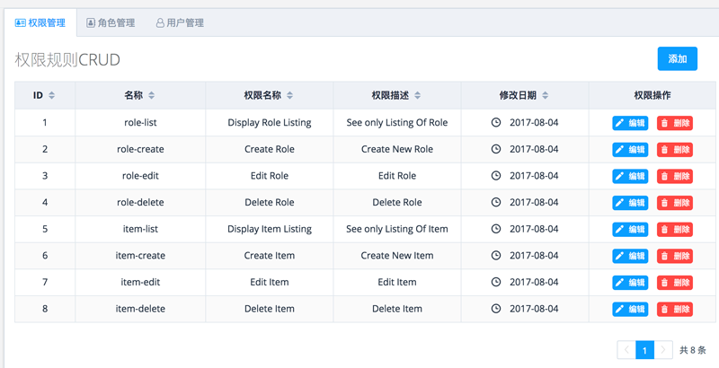

Project

初级前端，对目前的前端技术有基础的了解(html,scc, js, JWuery, ES6等)。接触过Angular4,Vue前端框架，目前完成的一些个人项目包括：权限管理的CRUD(基于laravel编写的api + Vue)，H5横版射击小游戏，单页加密币市场查询网站(Angular4）。希望能够通过实际项目，来加深对前端技术的进一步学习。
经历5年纯英语环境下的高等教育。 习惯通过阅读原版文档来学习前端概念知识，具备独立解决问题的能力。有写个人博客和笔记的习惯。 本科毕业于英国布里斯托大学土木工程，硕士毕业于香港理工大学科技管理专业。具有丰富的团队合作经验。
2012年9月-2015年9月就读于英国布里斯托大学土木工程系，获得二等工程学士学位。大学期间通过Matlab的学习对编程产生了兴趣。并选修了仿真建模课程来深入学习Matlab。
2016年9月-2017年6月就读于香港理工大学科技管理专业，以GPA3.25获得硕士学历。选修过信息安全等计算机专业课程， 并取得A等成绩。